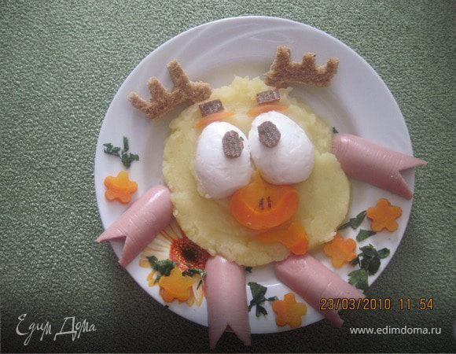

Лосяш — один из главных персонажей мультипликационной франшизы «Смешарики», интеллигентный лось-учёный. Интересуется многими науками: химией, астрономией, биологией, физикой и другими. Из-за сильной увлечённости Лосяша научной деятельностью в его доме царит беспорядок, да и вид его самого довольно неряшливый.
У Лосяша много друзей:
и другие.
Также у Лосяша много вещей:
и другие.